Juris A-6 combo amp: Mini-Brute-derived preamp, Baxandall bass and treble, Accu-Bell plate reverb module, a TPA3255 class D stage, soft-clipped so it tops out near 120 W, into an Eminence Beta-6A, in a 3D-printed cabinet drawn from the insignia. Single-unit prices in USD, before shipping and tax.
listed price seen at a distributor est. estimate, not yet quoted
| Part | Spec | Qty | Unit | Ext. |
|---|
A TI TPA3255 class D chip, one channel bridged, on a 48 V supply into the 8 Ω Beta-6A, soft-clipped so it never averages more than about 120 W, however hard it is driven. A soft-clip stage after the master volume rounds the signal off gradually, so the amp saturates instead of slamming into the chip's hard limit. At about 90 % efficiency it makes little heat, so there is no heatsink: the amp board's own aluminium heat-sink frame bolts flat to the plain back plate.
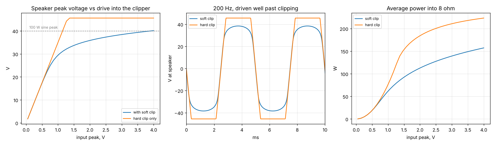
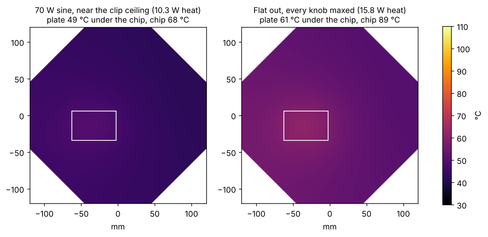
Soft clip. An inverting op-amp stage (gain 3.3) with two strings of seven 1N4148W diodes and 330 Ω across its feedback resistor, then a divider into the amp board. It gives a gradual knee from about 20 W and levels off well below the point where the TPA3255 runs out of supply. The divider is sized for the worst case, every knob maxed so the mixer swings to its rail: even then the near-square wave averages about 120 W, a draw of about 138 W from the 160 W brick, and stays inside the Beta-6A's 175 W rating.
Back-plate module. The power stage is a 3e Audio 480-1-29A: one TPA3255 in parallel-bridged mono, 85 × 120 mm, rated 180 W into 8 Ω on 36–51 V, with its own low-voltage supplies, so it needs nothing but 48 V and a signal. Its TPA3255 sits on the underside on a 2 mm raised pad of an 85 × 120 × 10 mm aluminium heat-sink frame, which bolts flat to the back plate: six M3 countersunk screws from outside go into the frame's own chassis holes (four at 63 × 102 mm and two mid-side, 75 mm apart), with a thermal pad between. The routed main board (48 V input, fuse, bulk cap, 12 V buck, 9 V and 30 V regulators, reverb module, and a balanced driver for the amp) stands beside it on its side, on four 7 mm standoffs. The power inlet and switch sit at the top of the plate. The whole module lifts out as one piece.
Layout matters. Class D switches at a few hundred kHz. The bought board takes care of the power stage and output filter; keep the input jack wiring and the reverb module's leads away from it, keep the speaker leads short, and ground the plate.
Control board. The control board hangs from the plate on the bushings of five board-mounted Alpha 9 mm pots, about 7 mm below it. The voice toggle mounts on the plate, drops through a window in the board, and wires to three pads beside it. A 6-way JST-XH harness (twist the send and return pairs) runs to the main board, and a 3-way lead carries the balanced drive to the amp board's input. The input jack sits on the control plate too, so it wires straight to the control board with no long signal run.
Speaker. The Beta-6A is a 175 W pro-audio mid-bass with a 2 in voice coil and a 125 mm magnet. Its useful range stops around 4 kHz, which suits a jazz voice; Henriksen adds a tweeter if you want more top end. Sealed in about 6 L it is 3 dB down at about 155 Hz, and the Baxandall bass control does real work.
Five sheets, from the input jack to the speaker, plus the supplies. Values match the simulations on this page. VG is the 15 V virtual ground the single-supply op-amps work around. Values marked * are set on the bench. The class D chip and the reverb module are drawn as blocks: build them to TI's reference design and the module's datasheet.
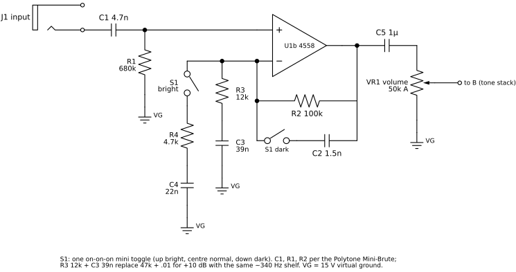
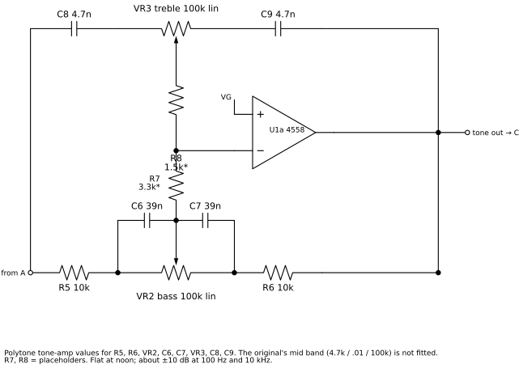
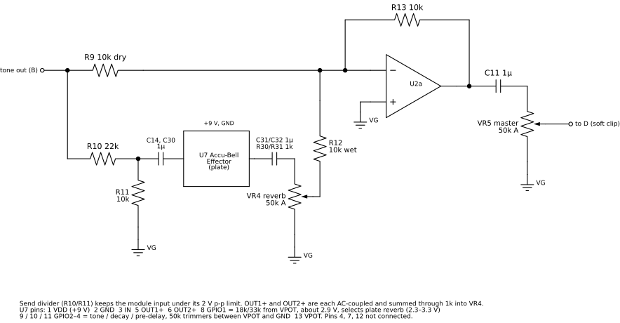
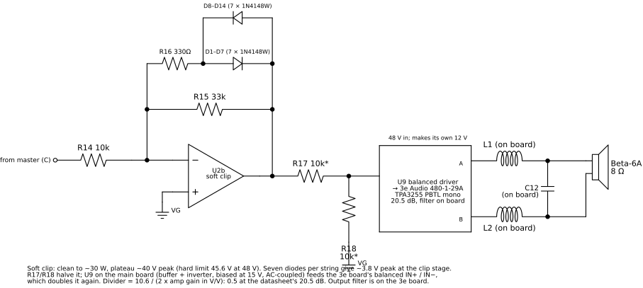
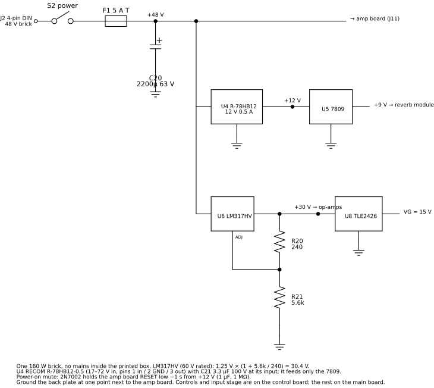
Main board Rev D, control board Rev E: two four-layer boards in Juris technical dress: black mask, white legend, gold pads. Both inner layers are solid ground, so every ground connection is a short drop to a plane and the outer layers carry signals and supplies. The main board is laid out noisy-left, quiet-right: 48 V input, fuse, bulk cap, 12 V switching regulator and the amp feed on one side, the 9 V and 30 V regulators and the reverb module on the other. The control board's underside follows the signal around the fixed pot positions: input and voice stage beside the toggle, the tone stack along the front between the Volume, Bass and Treble pins, the dry/reverb mixer in the middle, then master, the clip diode strings and the drive network along the rear by the connector to the main board. Rev D also fixes a net-name error that left the reverb return unconnected to the Reverb pot. Rev E adds R60 and the 2-pin J3 for the A-6 Head's 8 / 4 Ω LOAD switch; on the combo and cab, leave J3 unconnected (8 Ω). Labelled test pads on the back of each board match the bring-up steps. Both pass design-rule checks with no unconnected pads, no clearance errors and no legend overlaps.
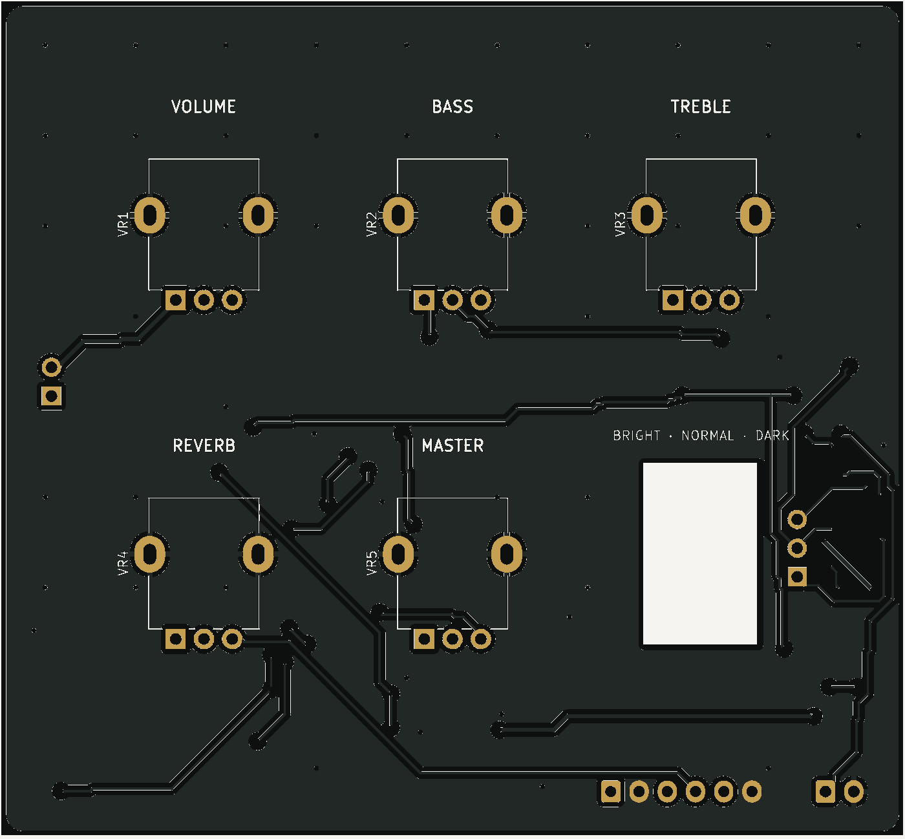
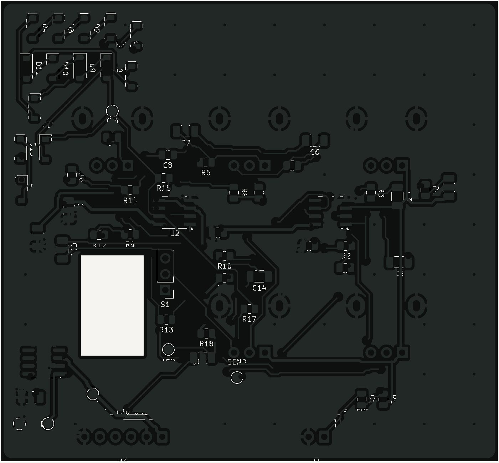
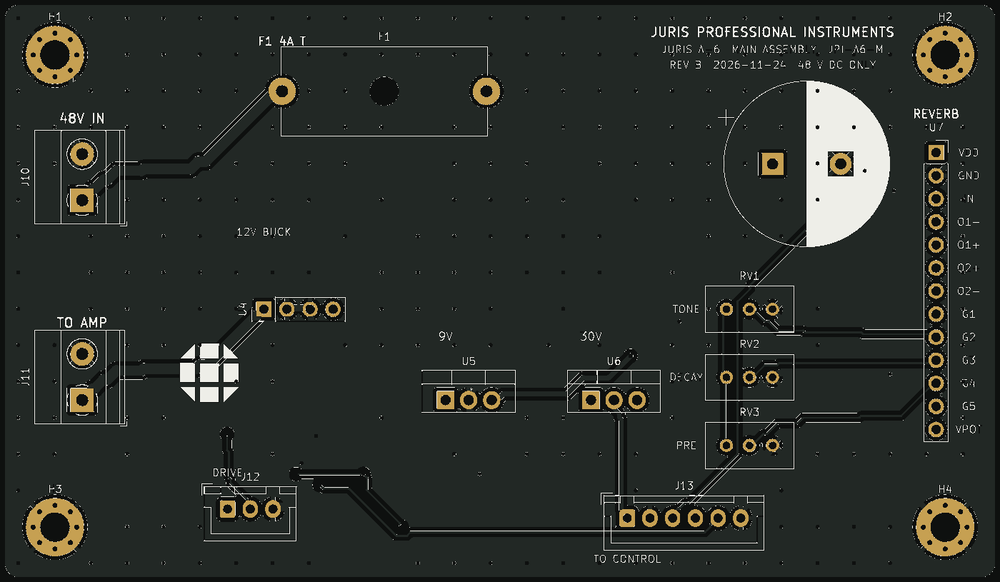
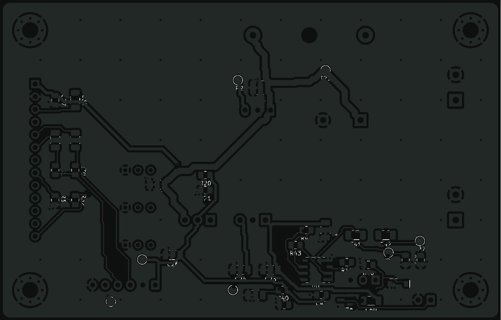
| Board | Size | Holds | Connects to |
|---|---|---|---|
| Control, JPI-A6-C | 80 × 74 mm, 1.6 mm, 4 layers; window for the toggle body | VR1–VR5 Alpha 9 mm pots, U1/U2 NJM4558, U8 TLE2426ID (all SOIC-8), soft-clip diode strings, S1 pads for the toggle leads | J1 input jack (XH-2), J2 to main (XH-6: +30 V, GND, send, return, drive, GND) |
| Main, JPI-A6-M | 100 × 64 mm, 1.6 mm, 4 layers | F1 5 A T fuse, C20 2200 µF 63 V, U4 RECOM 12 V regulator, U5 7809, U6 LM317, U7 reverb module socket, RV1–RV3 reverb trimmers, U9 balanced amp driver | J10 48 V in, J11 48 V and J12 drive to the amp board, J13 to control |
| Part | What the board follows | Source |
|---|---|---|
| Accu-Bell Effector (U7) | Single row, 13 pins, 0.1 in: VDD, GND, IN, OUT1−, OUT1+, OUT2+, OUT2−, GPIO1–5, VPOT. Runs on +9 V. GPIO1 at 2.3–3.3 V selects plate reverb; an 18k / 33k divider from VPOT puts it near 2.9 V. GPIO2–4 (tone, decay, pre-delay) each get a 50k trimmer between VPOT and ground. OUT1+ and OUT2+ are AC-coupled and summed into the reverb pot; the input is AC-coupled from the send. Every socket pin is labelled on the board. | Accu-Bell ABE datasheet |
| Alpha 9 mm pots (VR1–VR5) | RD901F-40 vertical footprint from KiCad's library, drawn from Alpha's drawing: three pins at 2.5 mm, two bracket tabs, shaft 7.5 mm ahead of the pins. Wired so clockwise is louder, more bass and more treble. M7 bushing, so the plate holes stay 7.5 mm. The board hangs about 7 mm under the plate. | Alpha / KiCad library |
| Mini on-off-on toggle (S1) | Generic MTS-103 type, drawn as the C&K 7103. Mounts on the plate by its bushing; its body drops through a window in the board, and its three lugs wire to the S1 pads beside it. A board-mounted toggle would stand too tall next to 9 mm pots. | C&K 7000 series |
| RECOM R-78HB12-0.5 (U4) | SIP-3 on 2.54 mm: pin 1 +Vin (square pad), 2 GND, 3 +12 V out; 11.5 × 8.5 × 17.5 mm, stands upright beside C20. 17–72 V in, 0.5 A out; the 7809 and the reverb module are its only load. RECOM asks for 3.3 µF / 100 V at the input above 50 V; C21 sits 5 mm from pin 1. It has a built-in soft start that a very fast input step can bypass: C20 ahead of it slows the switch-on edge, so switch on with the power toggle rather than plugging a live 48 V lead onto the board. | RECOM datasheet / KiCad library |
| TLE2426ID (U8) | SOIC-8: pin 1 out, 2 common, 3 in, 8 noise reduction (1 µF to ground). | TI datasheet |
| 3e Audio 480-1-29A (amp) | 36–51 V on Faston tabs from J11. Input on a 3-pin JST: IN+, IN−, AGND; J12 matches it, fed by the U9 balanced driver. Its input is balanced by default, and 3e says single-ended use needs a modification to the board, so U9 on the main board drives it properly: one half buffers the drive, the other inverts it, both AC-coupled into IN+ and IN−. With the datasheet's 20.5 dB gain, R17 / R18 at 18k / 10k and seven diodes per string put the soft-clip plateau at about 29 V peak cranked and 34 V with every knob maxed. If you measure a different gain, scale R17 so the divider R18 ÷ (R17 + R18) is 7.6 ÷ (2 × gain in V/V). Fault and clip outputs on its 10-pin header can drive LEDs. Speaker leads to its output tabs. | 3e Audio EAUMT-FB datasheet Rev 1.1 |
| 7809, LM317HV | Standard TO-220 pinouts: 7809 in, ground, out; LM317HV adjust, out, in. The HV part matters: it is fed from 48 V, and at switch-on its output starts at 0 V, which is past the ordinary LM317's 40 V limit. | Standard |
Still to check against the parts you actually buy: the amp board's frame holes are now in the back-plate cut file, taken from 3e's datasheet drawing (Rev 1.1); check them against the frame before you cut. Also check that the reverb module's printed pin labels match the board legend before you plug it in; one copy of the datasheet numbers the pins from the VPOT end, though the order is the same.
To order: upload each Gerber zip to JLCPCB with defaults, 1.6 mm, black mask. The BOM and placement CSVs are there if you want the surface-mount parts assembled; otherwise every part is 0805/1206, SOD-123 or SOIC and hand-solderable.
Power it up one stage at a time, so a fault shows up on the cheapest part it can. You need a multimeter; a current-limited bench supply and a small 8 Ω dummy load or test speaker help. Unplug and wait a minute before changing anything: the 2200 µF cap holds charge.
| Stage | Do | Expect | If not |
|---|---|---|---|
| 0 · Before power | Check C20's stripe (negative) matches the legend, the 7809 and LM317HV face the right way, and the op-amps' pin-1 dots match. Leave the reverb module out and the amp board unplugged. Check U4 (the RECOM) has its pin 1 in the square pad. | More than 1 kΩ from +48 V to GND (it climbs as C20 charges from the meter). No short from +30 V, VG or +9 V to GND. | Find the short before going on. |
| 1 · Main board alone | Power the main board from the brick, or a bench supply at 48 V limited to 100 mA. Measure at the test pads on the back of each board (labelled). | J10: 47.5–48.5 V. U4 out: 11.5–12.5 V (it wants a 10 mA load, so with the reverb module out it may sit at the top of that range). U5 (7809) out: 8.6–9.4 V. U6 (LM317HV) out: 29.5–31.3 V (240 Ω and 5.6k set 30.4 V). Draw: tens of mA. | A rail at 0 V: check the fuse and that part's orientation. 30 V wrong: check R20 / R21. |
| 2 · Reverb module | Power off. Plug the module into U7 with its VDD pin on the VDD legend. Power on. | Supply current rises about 90 mA. VPOT (pin 13): about 4.5 V. GPIO1 (pin 8): 2.3–3.3 V, about 2.9 V. Each trimmer wiper sweeps 0 to VPOT. | VPOT at 0 V or the module warm: power off at once; it is probably reversed. |
| 3 · Control board | Power off. Connect J13 to J2 and the input jack to J1. Power on, amp board still unplugged. | VG (U8 pin 1): half of +30 V, about 15.2 V. U1 and U2 pins 1 and 7: within 0.1 V of VG. U9 pins 1 and 7 on the main board: about 15 V. J12 pins 1 and 2: about 0 V DC. | An op-amp output stuck near 0 or 30 V: check its feedback parts and solder joints. |
| 4 · Signal check | Play guitar or a 100 mV, 1 kHz tone into the input. Volume and master up, meter on AC volts across J12 pins 1 and 2. | The reading rises smoothly with the master to around 2 V AC, then levels off; that is the soft clip. Pins 1 and 2 to ground each read half that. Bass and treble change it; the voice switch changes the top end. | Nothing at DRIVE: trace the signal back with the meter, stage by stage. |
| 5 · Amp board | Power off. Bolt the heat-sink frame to the back plate over a thermal pad, connect the speaker or a dummy load, master at zero. Connect J11, J12 and the mute lead (J16 to the amp board's J5 pins 4 and 5) and power on. | The amp stays muted for about a second after switch-on, then comes up with no thump. No fault light on the amp board. Less than 50 mV DC across the speaker terminals. Total draw well under 0.5 A at idle. | Fault light or high draw: power off; check the 48 V polarity at J11 and the speaker wiring. Neither speaker wire may touch ground. |
| 6 · Set up and soak | Set tone, decay and pre-delay by ear; mid-way is a good start. Then play loud for 15 minutes. | Back plate warm, not too hot to keep a hand on. No hum with the volume down. | Hot plate: reseat the frame and its thermal pad. Hum: check the input lead's shield and the plate ground. |
The three boards in place, cabinet hidden. The main and control boards are built straight from the routed PCB files, so every part sits where it is on the boards above. The amp board is the 3e Audio 480-1-29A, shown at its 85 × 120 mm size on its heat-sink frame and its tallest parts, 35 mm caps and the output inductors, as envelopes. Everything clears the shell and speaker; the tallest main-board part, the 2200 µF cap, clears the magnet by 52 mm. The reverb module and the RECOM 12 V regulator are drawn at their datasheet sizes.
| Part | Group | Note | Board |
|---|---|---|---|
| Main board JPI-A6-M | Board | 100 × 64 mm, 4-layer, black mask; turned on its side | Main |
| J11 48V TO AMP BOARD | Connectors | TerminalBlock | Main |
| J10 48V IN (from DIN + switch) | Connectors | TerminalBlock | Main |
| U5 7809 | Supplies | TO-220-3 | Main |
| J16 TO AMP J5: 4 RESET, 5 GND | Connectors | JST | Main |
| F1 5A T 5x20 | Supplies | Fuseholder | Main |
| U6 LM317HVT | Supplies | TO-220-3 | Main |
| RV2 DECAY 50k | Reverb | Potentiometer | Main |
| U4 R-78HB12-0.5 | Supplies | Converter | Main |
| C20 2200u 63V | Supplies | CP | Main |
| J12 TO AMP IN+ IN- AGND | Connectors | JST | Main |
| RV1 TONE 50k | Reverb | Potentiometer | Main |
| J13 TO CONTROL | Connectors | JST | Main |
| RV3 PRE 50k | Reverb | Potentiometer | Main |
| U7 ACCU-BELL EFFECTOR | Signal | PinSocket | Main |
| Bottom-side parts (regulator and reverb coupling) | Signal | 0805 / 1206, hand-solderable | Main |
| Accu-Bell reverb module (in U7) | Reverb | 36 × 21 × 6.5 mm card, stands upright in the 13-way socket | Main |
| Control board JPI-A6-C | Board | 80 × 74 mm, hangs on the pot bushings; window for the toggle body | Control |
| Voice toggle C&K 7103 (on the plate) | Controls | Solder lugs, wired to S1; body drops through the board window | Control |
| VR2 BASS 100kB | Controls | Alpha RD901F-40 9 mm vertical | Control |
| VR3 TREBLE 100kB | Controls | Alpha RD901F-40 9 mm vertical | Control |
| VR4 REVERB 50kA | Controls | Alpha RD901F-40 9 mm vertical | Control |
| VR1 VOLUME 50kA | Controls | Alpha RD901F-40 9 mm vertical | Control |
| VR5 MASTER 50kA | Controls | Alpha RD901F-40 9 mm vertical | Control |
| J2 TO MAIN | Connectors | JST-XH | Control |
| J3 TO 8/4 OHM SWITCH | Connectors | JST-XH | Control |
| U8 TLE2426ID | Signal | SOIC-8, underside | Control |
| S1 TO VOICE TOGGLE | Connectors | JST-XH | Control |
| U1 NJM4558 | Signal | SOIC-8, underside | Control |
| U2 NJM4558 | Signal | SOIC-8, underside | Control |
| J1 INPUT (to jack) | Connectors | JST-XH | Control |
| Underside passives and clip diodes | Signal | 0805 / 1206 / SOD-123 | Control |
| Input jack (on the plate, wired to J1) | Controls | Switchcraft 11 | Control |
| 3e Audio 480-1-29A amp board | Board | TPA3255 PBTL mono, 85 × 120 mm, parts toward the speaker | Amp (3e) |
| Heat-sink frame (TPA3255 underneath the board) | Power stage | 85 × 120 × 10 mm aluminium frame; six M3 into it from outside, thermal pad between | Amp (3e) |
| Output inductors (on amp board) | Power stage | VER2923-type, envelope | Amp (3e) |
| Bulk caps (on amp board) | Supplies | 35 mm tall, the board's tallest parts | Amp (3e) |
Hover or tap a row to highlight the part.
Every hole, boss and fastener is now in the CAD model. The shell prints in one piece, front face down, with no supports. The three plates are flat laser-cut parts with true circles in the DXFs.
Front. 9 mm integral baffle with a 144.5 mm speaker cutout for the Beta-6A. The speaker mounts from inside, on four M4 short inserts sunk into the back of the baffle, so nothing shows on the front. The brushed stainless grille sits proud on the face and is held by eight M3 button heads on the insignia gutters, outside the speaker opening, like the headstock badge.
Rear. A 12 mm inward ledge, 5 mm in from the rear edge, carries eight M4 inserts, one per edge. The back plate drops into that recess on a foam gasket and sits flush. A 45° chamfer under the ledge lets it print without support. The opening inside the ledge is 197 mm, so the 165 mm speaker goes in through the back.
Top. An 80 × 120 mm aluminium control plate (0.090 in) sits flush in a 2.3 mm pocket on the top flat, with four M3 screws into gusseted bosses. The pots mount to the metal, not the plastic. The window through the wall has a 45° roof at its rear edge so it prints without a long bridge. Layout: volume, bass, treble in the front row; reverb, master and the voice toggle behind; the input jack at the back.
Jack. The input jack is on the control plate, centred behind the back row of knobs (a 9.6 mm hole for a Switchcraft 11), 34 mm behind the reverb and master knobs. It goes through the control-plate window, clear of the handle strap and the speaker, and the cable leaves from the top.
Stance and tilt. No feet. Two runners are printed as part of the shell, one along each lower facet, 168 mm apart. Their bottoms are cut on a 5° slope, so the cabinet leans back and the speaker aims up at the player, and a strip of adhesive rubber under each keeps it from sliding. It would tip sideways at about 36°, steadier than the feet or the cradles. The tilt is set by the bed: the runners take the print to 240 × 253 mm, just inside a 256 mm bed, so 5° is the most it can carry. Their front ends rise at 45° to the front face, so the shell still prints without supports.
Handle. A generic black replacement amp handle (molded strap with two screw-on end caps). Its two end caps screw into the upper facets, two M4 inserts each in internal bosses, at the balance point about 84 mm back from the front. The strap arches 42 mm over the top flat, 22 mm clear of the knob tops. The 50 mm screw pitch is a placeholder: set it to your handle's caps.
Checked in the model. No interference between the speaker, shell, both boards, pots and jack. 52 mm between the magnet and the tallest part on the main board. About 6.6 L of air inside. Grille: 374 holes of 6.4 mm on a 9.2 mm stagger, about 26% open, with the gutters solid and the bottom-centre panel left solid for the wordmark.
Wordmark. JURIS is cut straight through the stainless grille as a stencil, 70 mm long with 22 mm capitals, centred in the bottom-centre panel below the speaker, so the black baffle shows through the letters. It is the house wordmark: Barlow Condensed Bold, sliced at the insignia's two gutters. Those two slices are also the stencil bridges, about 1.4 mm wide, which keep every letter piece and the bowl of the R attached to the sheet, so the grille stays one part with nothing to glue. Paths are in the grille DXF. Deburr the letter edges with the perforations.
Badge. A 40 mm Juris insignia in brass sits on the right-hand side flat (seen from the front), centred front to back. It is the cabinet's own octagon at one-sixth scale, with the two gutter crosses cut as slots; small bridges at the four crossings keep it one piece. The print has a 0.6 mm pocket in that shape, so the badge locates itself and sits 0.4 mm proud on 3M VHB tape. Brass picks up the amber knobs; cut it from stainless instead for a quieter look.
Grounding and shielding. Signal ground, the supply return and the two inner board planes all meet at the main board. Each aluminium plate is grounded at exactly one point: the back plate through a ring lug under one amp-board frame screw, the control plate through the input jack's sleeve. The printed cabinet does not shield anything, and a class D amp switches at a few hundred kHz inside it, so twist the speaker leads and clip a ferrite onto them near the amp board. The 4-layer boards and the aluminium control plate should keep the preamp quiet; if you still hear hum or buzz with the volume up, line the top of the cabinet around the control board with copper foil tape, overlapped and grounded to the control plate at one point.
Power-on mute. A 2N7002 on the main board holds the amp board's RESET input (its J5 pin 4) low for about a second after the 12 V rail comes up, while the preamp's coupling capacitors settle, then lets go. A diode clamps the gate when the power goes off. Wire it with a 2-way lead from J16 to J5 pins 4 (RESET) and 5 (GND).
Damping and lining. Printed walls, even 6 mm of ASA, are lighter and springier than plywood, so damp them first: 2 mm foil-backed butyl sheet on the inside of every wall except the top, about two-thirds of each panel, kept clear of the inserts and handle bosses. Then absorb the sound inside: 3/4 in acoustic foam or wool felt on the two sides, 1/2 in on the bottom (thinner there to keep 20 mm from the amp board), and a loose handful of polyester fill around the speaker magnet, in a thin cloth bag so it can't drift into the electronics. Leave the back plate's inside face, 20 mm around both boards and the control assembly bare; the Damping button on the model shows those keep-clear zones in red. Fit the lining with the speaker out, before the boards go in.
Verify before printing. The Beta-6A's published cutout (144.5 mm) and bolt circle (153.9 mm) are in the model; check the number of mounting holes on the driver itself. Check your insert supplier's hole sizes too (M3 4.0 mm, M4 5.6 mm assumed).
| Joint | Hardware | Qty |
|---|---|---|
| Back plate to shell | M4 x 10 button head + M4 heat-set insert | 8 |
| Speaker to baffle (from inside) | M4 x 8 pan head + washer + M4 short insert (5.7 mm) | 4 |
| Grille to baffle, in the gutters | M3 x 6 button head, stainless + M3 insert | 8 |
| Control plate to top flat | M3 x 6 flat head + M3 insert | 4 |
| Main board standoffs | M3 x 7 F-F standoff + 2 x M3 x 5 screw | 4 |
| Amp heat-sink frame to back plate | M3 x 8 countersunk from outside into the frame's chassis holes (63 x 102 and the two mid-side) + thermal pad | 6 |
| Runner pads | Adhesive EPDM or neoprene strip, 12 x 1.6 mm, ~140 mm under each runner | 2 |
| Strap handle end caps (one per upper facet) | M4 x 12 machine screws + M4 short inserts in internal bosses (match the cap's hole pitch, 50 mm assumed) | 4 |
| Back plate gasket | 1.5 mm closed-cell foam tape on ledge | 1 |
Files: juris_a6_shell.stl (print, black ASA), juris_a6_back_plate.dxf (5052, 0.125 in, black outside), juris_a6_control_plate.dxf (5052, 0.090 in), juris_a6_grille.dxf (304 stainless, brushed, 0.048 in, wordmark included), juris_a6_badge.dxf (brass, 0.040 in), juris_a6_assembly.glb (this model), juris_a6_boards_revE.zip (main Rev D, control Rev E: 4-layer Gerbers, BOMs, placement, KiCad).
The same cabinet as a ported, passive 8 Ω speaker cab covered in black tolex, about $285 in parts. The combo's shell with rounded edges for the covering, and a recessed grip printed into the top instead of the strap, so an A-6 Head can sit on it; the same grille, wordmark, badge, speaker and damping; and a printed back with two jacks and a swappable bass port. Use Cab only on Fig. 1 to see it.
| Part | Spec | Qty | Unit | Ext. |
|---|---|---|---|---|
| Eminence Beta-6A, 8 Ω | Same driver as the combo | 1 | $89.99 | $89.99 |
| Black ASA filament, Polymaker ASA, 1 kg spools | Shell, back, port, plug and runners; ~1.7 kg if printed solid. Any colour will do under the tolex, but the front shows through the grille, so black | 2 | $29.99 | $59.98 |
| Perforated stainless grille | The combo's grille drawn 3 mm smaller all round (juris_a6_cab_grille.dxf), so a band of tolex shows round it; wordmark cut through | 1 | $35.00 | $35.00 est. |
| Juris insignia badge | Same part as the combo; sits in a 0.3 mm pocket inside a cutout in the tolex, flush with it | 1 | $12.00 | $12.00 est. |
| Switchcraft 11 jacks | IN and THRU, wired in parallel | 2 | $4.00 | $8.00 |
| Speaker wire and 6.3 mm quick-disconnects | Jacks to the speaker tabs | 1 | $4.00 | $4.00 est. |
| Heat-set inserts and screws | 8 M4 back, 4 M4 speaker, 8 M3 grille, 3 M3 port (M3 × 8 button heads), 4 M3 runners (M3 × 12) | 1 | $10.00 | $10.00 est. |
| Closed-cell foam gasket tape | Back-panel seal on the ledge, and a ring under the port flange | 1 | $6.00 | $6.00 est. |
| Butyl damping sheet, 2 mm, foil-backed | About 630 cm² on the walls | 1 | $10.00 | $10.00 est. |
| Acoustic foam or wool felt | Sides 20 mm, bottom 12 mm | 1 | $10.00 | $10.00 est. |
| Polyester fibre fill | Tune by ear; keep it out of the port's path | 1 | $5.00 | $5.00 est. |
| Adhesive rubber strip for the runners | Under the two runners (skip it if you print the runners in TPU) | 1 | $3.00 | $3.00 est. |
| Black levant tolex, medium weight, 54 in wide | Amplified Parts Black Bronco Levant, by the yard; the cab band is about 800 × 230 mm, so one yard covers the cab and the head together | 1 | $16.95 | $16.95 |
| Contact cement, DAP Weldwood Original, 16 oz | Solvent (tan) formula, both faces, let it tack; one can does the cab and the head together | 1 | $15.48 | $15.48 |
| Total | $285.40 |
Back. Printed in the same black ASA and dropped into the back recess on the same gasket and eight M4 screws, 0.7 mm smaller all round than the combo's plate to leave room for the tolex. A 3.2 mm skin with 14 mm ribs inside on the insignia grid (a ring just inside the ledge plus the two gutter crosses) keeps it from drumming. The ribs pass through the ledge opening and stop 82 mm behind the magnet. The label is debossed 0.6 mm into the outside face below the port: the sliced wordmark, A-6 CAB · JPI-A6-E, 8 Ω · 175 W · JACKS IN PARALLEL, and IN / THRU over the jacks. Print it outside face down, with no supports; the lettering is on the bed side, so it comes out crisp.
Port. A bass-reflex port in the centre of the back: a printed tube with a 50 mm bore, 68 mm long, flared 45° at both ends, on a 96 mm flange. It drops in from outside: a 45° shoulder under the flange (the outside of the outer flare) centres it in a matching cone in the hole, and the flange sits in a 3 mm counterbore on a ring of gasket tape, and is held by three M3 screws into inserts in a boss on the inside. The inner mouth ends 31 mm behind the magnet. That tunes the cab to about 97 Hz: in a simple model it is 3 dB down at about 94 Hz instead of 164 Hz sealed, about 6 dB louder at the low E, and the cone moves less at the low E, so it takes more power before it runs out of travel. The port's air reaches about 18 m/s at 25 W of low E, quiet with the flares; a 100 W low-E sine would chuff, but guitar notes carry far less energy at the fundamental. Below about 75 Hz the cone is unloaded, so keep subsonic rumble and drop tunings off the bass knob at high volume. The solid plug (debossed SEALED) swaps in on the same screws to run it sealed for comparison. Print both flange down, no supports.
Top. The control-plate pocket and window are left out, and so is the strap handle. Instead a grip is printed into the top flat: a 40 × 86 mm opening with 10 mm lips on each side to hook your fingers under, over a closed tub 30 mm deep, so the box stays sealed. The top stays flush, which is what lets the head sit on it. Both ends of the tub are at 45°, so it prints front-down with no supports. The opening has a 2 mm 45° edge so the tolex can turn down into it. The speaker and grille inserts are unchanged.
Tolex. The cab is covered in black levant tolex, like a classic amp, and so is the head. Every outside edge of the shell is rounded to 3 mm so the vinyl doesn't wear through on a printed corner. Wrap it as one band round the eight sides with the seam on the bottom flat. At the front it turns over the rounded edge onto a 12 mm return that sits 0.7 mm below the front face, so it lies flush and the grille clamps it. At the back it turns into the 5 mm recess, which is 0.7 mm oversize all round for it, and stops at the ledge. Cut it out round the grip opening and fold the flaps down over its edge, and cut the badge octagon out using the pocket as the template. Because the covering hides the print, the shell can be printed with coarse layers in any colour, as long as the front face is black, since it shows through the grille holes.
Feet. The two runners are separate prints that screw on after the covering, with two M3 × 12 each into heat-set inserts in bosses inside the lower facets. Their tops are shaped to the facet plus the tolex, and they keep the 5° lean back. With nothing hanging off the shell, it prints in a 240 × 240 mm footprint. Print the runners on their sides, in ASA with rubber strip underneath, or in TPU on their own. The inserts go in at 45°: press each until its rim is just below the facet's high side.
Wiring. Both jacks in parallel: tips to the speaker's + tab, sleeves to −. Use a speaker cable, not a guitar cable. One cab is 8 Ω. Two in parallel through THRU is 4 Ω, which most amps handle, but check yours. The A-6 combo into this cab with its own speaker still connected would also see 4 Ω and could trip its 160 W brick when cranked; that needs the switched speaker-out jack from the chassis rework.
Inside. About 6.0 L of air, all of it for the speaker, since there are no boards; the grip's tub takes 0.2 L and the port 0.15 L. Keep any fibre fill clear of the port's inner mouth. The damping is the combo's: butyl on the walls, foam or felt on the sides and bottom, and fibre fill to taste.
Files. juris_a6_cab_shell.stl and juris_a6_cab_back.stl, juris_a6_cab_port.stl and juris_a6_cab_port_plug.stl, juris_a6_cab_runners.stl (print, black ASA), juris_a6_cab_grille.dxf (304 stainless, brushed, 0.048 in) and juris_a6_badge.dxf (shared with the combo), juris_a6_cab_assembly.glb.
The A-6 electronics in a free-standing head, 240 × 146 × 176 mm (the cab's width and depth; 182 mm tall on its rails) and about 2.2 kg, covered in black tolex to match the cab, that also sits on the A-6 Cab, for about $522 in parts. Same boards, same control plate, same 160 W brick, with a speaker-out jack and an 8 / 4 Ω LOAD switch. Use Head or Stack on Fig. 1 to see it.
| Part | Spec | Qty | Unit | Ext. |
|---|---|---|---|---|
| 3e Audio 480-1-29A amp board | TPA3255 PBTL mono on its heat-sink frame (not the -NHS version); 36–51 V, 180 W into 8 Ω; €129 at Audiophonics | 1 | $90.00 | $90.00 est. |
| RECOM R-78HB12-0.5 (U4) | 12 V 0.5 A switching regulator, SIP-3, 17–72 V in; feeds the 7809 for the reverb module. Plus C21, 3.3 µF 100 V X7R 1210 at its input | 1 | $17.50 | $17.50 |
| Thermal pad + M3 countersunk screws | Pad between the heat-sink frame and the back plate; six M3 × 8 countersunk | 1 | $5.00 | $5.00 est. |
| Balanced driver for the amp input | NJM4558 (SOIC-8), resistors, 10 µF couplings on the main board | 1 | $2.00 | $2.00 est. |
| Soft-clip diodes | 14 × 1N4148W, SOD-123 | 1 | $1.50 | $1.50 est. |
| Op-amps, NJM4558 (SOIC-8) | U1 preamp and tone; U2 mixer and soft clip; OPA2134UA drops in | 2 | $0.90 | $1.80 est. |
| Accu-Bell Effector (ABE) module | Plate reverb with tone, decay and pre-delay; runs on 5.5–9.5 V | 1 | $27.00 | $27.00 |
| 13-way 0.1 in socket, 3 × 50k trimmers, 7809 | Generic 3296W-pattern trimmers for tone, decay, pre-delay; 18k / 33k divider selects plate reverb | 1 | $4.00 | $4.00 est. |
| Mean Well GST160A48-R7B brick | 48 V 3.34 A (160 W), 4-pin DIN output; worst-case draw ~138 W with every knob maxed | 1 | $52.40 | $52.40 |
| LM317HVT + TLE2426ID | 30 V preamp rail (60 V-rated regulator, fed from 48 V); virtual ground in SOIC-8 with noise-reduction cap | 1 | $6.00 | $6.00 est. |
| 4-pin power DIN inlet + power toggle | Matches the R7B plug | 1 | $10.00 | $10.00 est. |
| F1 fuse + PCB holder | 5 × 20 mm, 5 A slow-blow | 1 | $3.00 | $3.00 est. |
| Alpha 9 mm vertical pots, RD901F-40-15R1 | 50kA volume, reverb, master; 100kB bass, treble; M7 bushing, 6.35 mm shaft | 5 | $1.29 | $6.45 |
| Amber ribbed knobs | Matches the C-75 knobs | 5 | $2.50 | $12.50 est. |
| Mini toggle, on-off-on, solder lugs (generic MTS-103 type) | Bright / normal / dark, wired to S1; 6 mm bushing, body drops through the 10 × 16 mm board window | 1 | $2.00 | $2.00 est. |
| Switchcraft 11 input jack | On the control plate | 1 | $4.00 | $4.00 est. |
| PCBs, 4-layer, black mask | Main 100 × 64 mm and control 80 × 74 mm, 5 of each, JLCPCB; both inside the 100 × 100 mm price tier; get a quote | 1 | $20.00 | $20.00 est. |
| Ferrite | Clip-on ferrite on the speaker-out lead | 1 | $3.00 | $3.00 est. |
| JST-XH harnesses | 6-way control to main, 3-way drive to amp board; input lead shielded | 1 | $4.00 | $4.00 est. |
| Resistors, film and electrolytic caps | Includes .039 / .0047 tone-stack films; R60 12k and a 2-pin header for the LOAD switch | 1 | $15.00 | $15.00 est. |
| Wire, speaker leads, connectors | Speaker-out lead from the amp board to the jack | 1 | $8.00 | $8.00 est. |
| Juris insignia badge | 40 mm, laser-cut 0.040 in brass, SendCutSend; 3M VHB into a 0.3 mm pocket in a cutout in the tolex on the right side, flush with it | 1 | $12.00 | $12.00 est. |
| Aluminium control plate | 5052 .090 in, SendCutSend, 80 × 120 mm | 1 | $18.00 | $18.00 est. |
| Closed-cell foam gasket tape | Back-plate seal | 1 | $6.00 | $6.00 est. |
| Aluminium back plate, head | 5052 .125 in, SendCutSend, black finish outside; 226 × 132 mm stretched octagon | 1 | $32.00 | $32.00 est. |
| Switchcraft 11 speaker-out jack | On the back plate, ¼ in, 8 or 4 Ω cab | 1 | $3.99 | $3.99 |
| Switchcraft S1029 + S1028 insulating washers | Shoulder washer through an 11.5 mm hole plus flat washer: the jack sleeve must not touch the plate | 1 | $1.12 | $1.12 |
| Mini toggle, SPST on-off (LOAD) | 8 / 4 Ω, in front of the control plate, with a printed LOAD label plate under its nut; wired to J3 on the control board | 1 | $2.00 | $2.00 est. |
| Perforated stainless fascia | 304 brushed, 0.048 in, SendCutSend, drawn 3 mm smaller all round for a tolex border, 212 holes, gutters solid, JURIS wordmark cut through | 1 | $30.00 | $30.00 est. |
| Black ASA filament, Polymaker ASA, 1 kg spools | Shell, rails and LOAD plate, ~1.2 kg if printed solid; any colour under the tolex but the front, which shows through the fascia | 2 | $29.99 | $59.98 |
| Heat-set inserts and screws | 12 M4 back plate, 4 M4 handle caps, 4 M3 control plate, 8 M3 fascia, 4 M3 main board bosses, 4 M3 rails (M3 × 12) | 1 | $18.00 | $18.00 est. |
| Generic black amp strap handle with end caps | The combo's handle; caps on the top flat either side of the controls | 1 | $8.00 | $8.00 est. |
| Adhesive rubber strip for the rails | 12 × 1.6 mm EPDM or neoprene on the two rail feet, about 340 mm | 1 | $3.00 | $3.00 est. |
| Black levant tolex, medium weight, 54 in wide | Amplified Parts Black Bronco Levant, by the yard; the head band is about 700 × 230 mm, so one yard covers the cab and the head together | 1 | $16.95 | $16.95 |
| Contact cement, DAP Weldwood Original, 16 oz | Solvent (tan) formula, both faces, let it tack; one can does the cab and the head together | 1 | $15.48 | $15.48 |
| Total | $521.67 |
Shape. The insignia's octagon stretched to 2:1, with 30 mm chamfers on the four long edges, printed in one piece front face down (240 × 146 mm on the bed) and covered in black tolex like the cab, with the same 3 mm rounded edges, 12 mm front return under the fascia and 0.7 mm allowance in the back recess. Two printed rails run front to back underneath; they screw on after the covering, two M3 × 12 each up through the feet into inserts in bosses on the floor, and their tops allow for the tolex on both the head and the cab. On a table they are its feet, with rubber strip on the soles, and they put the top of the knobs 199 mm off the table. The brass badge sits on the right side flat, as on the combo.
Handle. The combo's strap handle, with its end caps on the top flat either side of the controls, 156 mm apart on M4 inserts. The strap arches 45 mm over the top, 22 mm clear of the knobs under it, so it can lie down without touching them.
On the cab. The rails' inner faces are cut at 45° to match the A-6 Cab's upper facets, so the head drops onto the cab and centres itself: the rails carry it on the facets, its floor sits 3 mm above the cab's top flat, and since it is as wide and as deep as the cab, the stack is flush on all four sides. The cab's recessed grip keeps its top flush for this. The stack is 434 mm tall to the top of the strap. Use Stack on Fig. 1 to see it.
Front. A brushed stainless fascia on eight M3 screws, perforated on the nine-patch stretched to the head (gutters at ±45 mm, as on the combo, and ±27.4 mm) with JURIS cut through the bottom-centre panel, exactly as on the combo grille. The printed front wall behind it is solid; the head needs no vents, because the amplifier's heat leaves through the back plate.
Top. The combo's control plate, unchanged: the same DXF, knobs and input jack, in the same pocket and window, centred on the depth. In front of it, centred, the LOAD switch goes through a 3 mm web in the printed top. Lettering can't be debossed under tolex, so 8 Ω (left), 4 Ω (right) and LOAD are debossed in a small printed plate (70 × 14 mm) held down by the switch's nut. The tolex turns down into the control-plate pocket, which is 0.7 mm oversize all round for it, over a 1 mm 45° edge.
LOAD switch. Wire it to J3 on the control board so that 4 Ω closes the switch. Closed, it puts R60 (12k) across R18 and lowers the soft-clip ceiling, so a 4 Ω cab draws the same from the brick as an 8 Ω one: at most about 100 W out and about 120 W from the brick with every knob maxed. Set it to match the cab. A 4 Ω cab on the 8 Ω setting could ask for about 240 W, and the brick would shut down. Open (the combo and the cab, where J3 is not connected) is 8 Ω.
Back. A 0.125 in aluminium plate, black outside, in the rear recess on gasket tape and twelve M4 screws (two on each long edge). It is the heat sink: the 3e board's frame bolts to it on its six M3 holes, turned so its 120 mm runs across, with the chip left of centre. Power inlet and switch on the player's left as you face the back, speaker-out jack on the right.
Speaker out. The TPA3255 output is bridged, so neither speaker wire is ground. The jack's sleeve must not touch the plate: mount the Switchcraft 11 with an S1029 shoulder washer through the 11.5 mm hole and an S1028 flat washer on the other side, and check with a meter that sleeve to plate is open before power-up. Tip to the amp board's OUT+, sleeve to OUT−. Never connect the sleeve to ground, a chassis or another amp.
Inside. The main board sits on four printed bosses on the floor, 39 mm in front of the amp board's tallest parts. The control board hangs under the top plate with about 80 mm of air below it. The input jack clears the amp board's top edge by about 5 mm. Every fit check comes out at zero interference.
Heat. The back plate is smaller than the combo's (about 226 × 132 mm against 228 mm square; the tolex allowance costs about 1 °C), so the head runs about 15 °C warmer when flat out. During normal loud playing it sits near 47 °C at the chip. Flat out for a long time, the plate reaches about 76 °C, which is hot to the touch, and the chip estimate is about 104 °C (107 °C at 4 Ω). The model behind these numbers matches the combo's to within a degree.
Files. juris_a6_head_shell.stl, juris_a6_head_rails.stl and juris_a6_head_load_plate.stl (print, black ASA), juris_a6_head_back_plate.dxf (5052, 0.125 in), juris_a6_head_fascia.dxf (304 stainless, brushed, 0.048 in), juris_a6_control_plate.dxf and juris_a6_badge.dxf (shared with the combo), juris_a6_head_assembly.glb, juris_a6_stack.glb (head on cab). The boards are the combo's: control board Rev E adds R60 and J3.
Listed prices. Mean Well GST120A48-R7B at Jameco ($44.70). Accu-Bell Effector at Next Gen Guitars (C$36.99, about US$27). Eminence Beta-6A at Adorama ($89.99).
Biggest unknowns. The amp board's US price, which varies by seller. The SendCutSend grille, which is priced largely by cut time, so its 374 perforations and the wordmark dominate its cost. Get a live quote before building. The reverb module has gone in and out of stock at US dealers, so buy one early.
Not included. Shipping (several suppliers, so budget $40–60), the printer and filament waste, tools, and your time. A JLCPCB order makes five boards, so boards for units 2–5 are almost free.
Power rails. One 160 W, 48 V brick feeds everything (the soft clip holds the amp to about 120 W average even with every knob maxed, a worst-case draw of about 138 W, so the brick never trips): the amp board directly, and through the main board a RECOM 12 V switching regulator feeding a 9 V regulator for the reverb module and an LM317HV at 30 V split by a TLE2426 for the op-amps. No mains inside the printed box.
Cabinet. Printed in black ASA, front face down, in one piece. ASA needs an enclosed printer that keeps its chamber warm, but no hardened nozzle or 300 °C hotend; the part needs a 320 mm-class bed to leave room for a brim, so the QIDI Plus5 (320 × 320 × 300 mm) still fits, as does any enclosed printer that size. About 0.95 kg with 6 mm walls, a 9 mm baffle and 45% gyroid infill. Starting points, to be checked against the spool's datasheet: 0.4 or 0.6 mm nozzle at about 245–260 °C, textured PEI at 90–100 °C, chamber as warm as the printer holds it, part fan low, slow first layers and a brim or corner ears, and let the part cool in the closed printer. ASA needs no drying, is UV-stable, and only softens near 100 °C, so the heat inside the box and a car in summer are fine. A print service would cost roughly $80–200 plus shipping instead of the filament line. Shown in black with a brushed stainless grille and amber knobs.